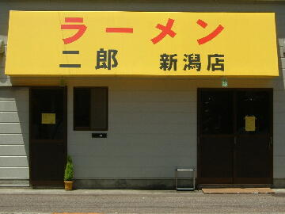
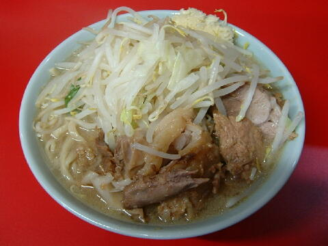

新潟市 中央区 万代 5-2-8
月・第１、３日・祝
11：00〜14：00 16：30〜22：00
土・日 10：00〜16：00

ラーメン小 750円、ラーメン小ぶた入り 900円
ラーメン大 850円、ラーメン大ぶた入り 1000円
店員は、元松戸駅前店店主の店主と慣れた感じの助手。
コショウ。一味唐辛子。醤油ダレ。
レンゲ有。エコ箸と割り箸。ティッシュ有。名刺無。
BGMは、J-POP。
トッピングは、二郎標準だが、食券を渡す時に告げるので心積もりを決めておこう。
「ラーメン二郎 新潟」でヤフー検索
「ラーメン二郎 新潟」でヤフーリアルタイム検索
「ラーメン二郎 新潟」でグーグル検索

ラーメン小ぶた入り ニンニク
麺は、新潟米よりもモチモチした食感の二郎の極太麺ら。量は二郎にしてはちょっとばか。
ぶたは、笹団子くらいの塊がゴロゴロ。柔らかく程よい味付けで非常に美味いものら(和豚もちぶた）。
スープは、豚出汁、醤油、乳化度のバランスがしかもか良く美味いら。松戸で出して欲しかったねっか。
ヤサイは、モヤシ8：キャベツ2の割合。ホクホクで美味いら。
ニンニクは、上質な生ニンニクがふっとつ。
ＰＣ店